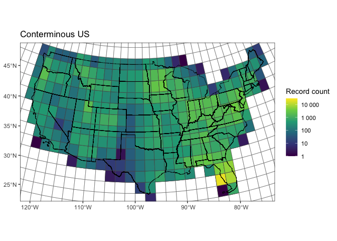
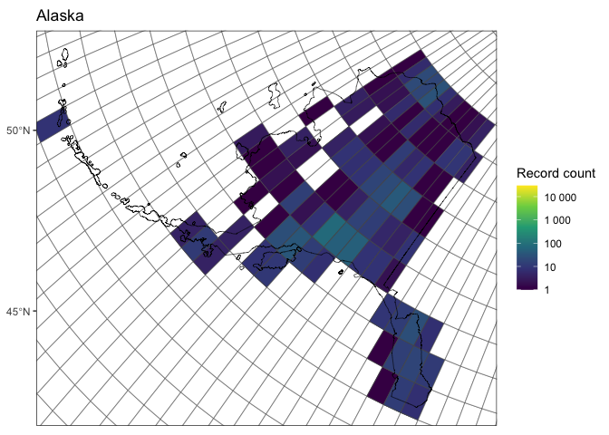
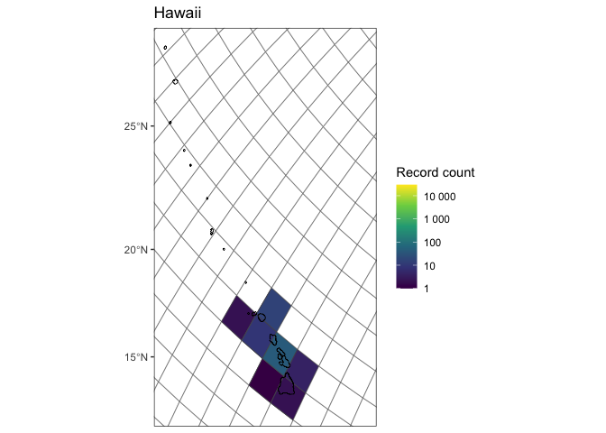
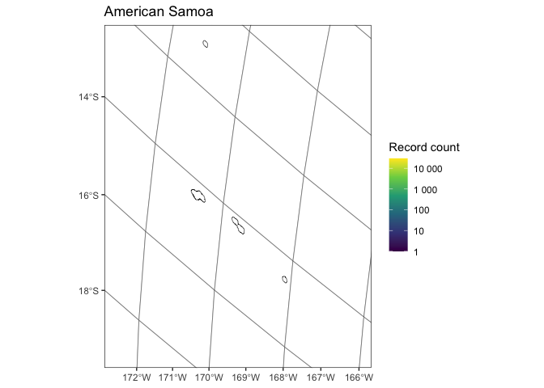
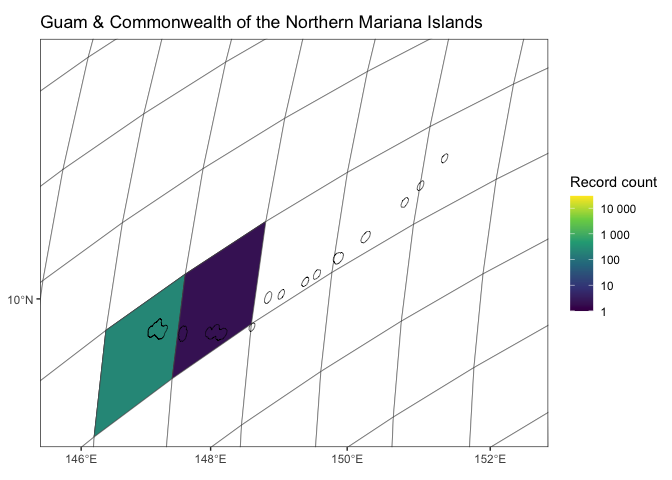
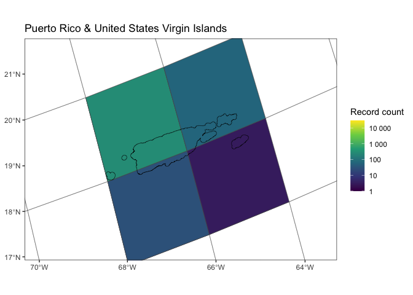

2 Download process
2.0.1 Catalogue existing data
The download process begins by cataloging the existing data that is
available in the WQP. To do this the user specifies parameters and their
corresponding characteristicName for retrieving data from the WQP.
Below are the current parameters and their characteristicName as
defined in the configuration YAML, 1_inventory/cfg/wqp_codes.yml. Data
for these parameters are requested from the WQP within a spatial grid
that is mapped in the next section.
Code
yaml_contents <- read_yaml("../1_inventory/cfg/wqp_codes.yml")
names_yaml <- names(yaml_contents)
map_df(.x = names_yaml,
.f = ~yaml_contents[.x] %>%
as_tibble() %>%
rename(characteristicName = 1) %>%
mutate(parameter = .x) %>%
select(parameter, characteristicName)) %>%
kable() %>%
kable_material() %>%
collapse_rows(columns = 1, valign = "top")| parameter | characteristicName |
|---|---|
| chlorophyll | Chlorophyll a |
| chlorophyll | Chlorophyll a (probe relative fluorescence) |
| chlorophyll | Chlorophyll a, corrected for pheophytin |
| chlorophyll | Chlorophyll a (probe) |
| chlorophyll | Chlorophyll a, free of pheophytin |
| chlorophyll | Chlorophyll a, uncorrected for pheophytin |
| chlorophyll | Chlorophyll a - Phytoplankton (suspended) |
| doc | Organic carbon |
| doc | Total carbon |
| doc | Hydrophilic fraction of organic carbon |
| doc | Non-purgeable Organic Carbon (NPOC) |
| secchi | Depth, Secchi disk depth |
| secchi | Depth, Secchi disk depth (choice list) |
| secchi | Secchi Reading Condition (choice list) |
| secchi | Secchi depth |
| secchi | Water transparency, Secchi disc |
| tss | Total suspended solids |
| tss | Total Particulate Matter |
| tss | Total Suspended Particulate Matter |
2.0.2 Maps of data spread:
Maps are presented below with counts of records across a grid. The grid is how records are grouped in download requests to the Water Quality Portal. Note: The counts here are for raw data that are not filtered or harmonized.
Code
## Retrieving data for the year 2021Code
# Conterminous US map:
conterminous_us <- state_selection %>%
filter(!(NAME %in% c("Alaska", "Hawaii", "American Samoa",
"Guam", "Puerto Rico",
"United States Virgin Islands",
"Commonwealth of the Northern Mariana Islands")))
ggplot() +
geom_sf(data = grid_counts,
aes(fill = n)) +
geom_sf(data = conterminous_us,
fill = NA, color = "black") +
xlab(NULL) +
ylab(NULL) +
coord_sf(xlim = c(min(st_coordinates(conterminous_us)[,"X"]),
max(st_coordinates(conterminous_us)[,"X"])),
ylim = c(min(st_coordinates(conterminous_us)[,"Y"]),
max(st_coordinates(conterminous_us)[,"Y"]))) +
scale_fill_viridis_c("Record count",
trans = "log10",
labels = scales::label_number(),
na.value = "white",
breaks = c(1, 10, 100, 1000, 10000)) +
ggtitle("Conterminous US") +
theme_bw()
Code
# Alaska map:
AK <- state_selection %>%
filter(NAME == "Alaska")
ggplot() +
geom_sf(data = grid_counts,
aes(fill = n)) +
geom_sf(data = AK,
fill = NA, color = "black") +
xlab(NULL) +
ylab(NULL) +
coord_sf(xlim = c(min(st_coordinates(AK)[,"X"]),
max(st_coordinates(AK)[,"X"])),
ylim = c(min(st_coordinates(AK)[,"Y"]),
max(st_coordinates(AK)[,"Y"]))) +
scale_fill_viridis_c("Record count",
trans = "log10",
labels = scales::label_number(),
na.value = "white",
breaks = c(1, 10, 100, 1000, 10000)) +
ggtitle("Alaska") +
theme_bw()
Code
# Hawaii map:
HI <- state_selection %>%
filter(NAME == "Hawaii")
ggplot() +
geom_sf(data = grid_counts,
aes(fill = n)) +
geom_sf(data = HI,
fill = NA, color = "black") +
xlab(NULL) +
ylab(NULL) +
coord_sf(xlim = c(min(st_coordinates(HI)[,"X"]),
0.9 * max(st_coordinates(HI)[,"X"])),
ylim = c(1.1 * min(st_coordinates(HI)[,"Y"]),
max(st_coordinates(HI)[,"Y"]))) +
scale_fill_viridis_c("Record count",
trans = "log10",
labels = scales::label_number(),
na.value = "white",
breaks = c(1, 10, 100, 1000, 10000)) +
ggtitle("Hawaii") +
theme_bw()
Code
# American Samoa map:
AS <- state_selection %>%
filter(NAME %in% c("American Samoa"))
ggplot() +
geom_sf(data = grid_counts,
aes(fill = n)) +
geom_sf(data = AS,
fill = NA, color = "black") +
xlab(NULL) +
ylab(NULL) +
coord_sf(xlim = c(1.025 * min(st_coordinates(AS)[,"X"]),
0.975 *max(st_coordinates(AS)[,"X"])),
ylim = c(1.05 * min(st_coordinates(AS)[,"Y"]),
max(st_coordinates(AS)[,"Y"]))) +
scale_fill_viridis_c("Record count",
trans = "log10",
labels = scales::label_number(),
na.value = "white",
breaks = c(1, 10, 100, 1000, 10000)) +
ggtitle("American Samoa") +
theme_bw()
Code
# Guam & Commonwealth of the Northern Mariana Islands map
GU_CNMI <- state_selection %>%
filter(NAME %in% c("Guam", "Commonwealth of the Northern Mariana Islands"))
ggplot() +
geom_sf(data = grid_counts,
aes(fill = n)) +
geom_sf(data = GU_CNMI,
fill = NA, color = "black") +
xlab(NULL) +
ylab(NULL) +
coord_sf(xlim = c(1.025 * min(st_coordinates(GU_CNMI)[,"X"]),
0.975 * max(st_coordinates(GU_CNMI)[,"X"])),
ylim = c(0.95 * min(st_coordinates(GU_CNMI)[,"Y"]),
1.05 * max(st_coordinates(GU_CNMI)[,"Y"]))) +
scale_fill_viridis_c("Record count",
trans = "log10",
labels = scales::label_number(),
na.value = "white",
breaks = c(1, 10, 100, 1000, 10000)) +
ggtitle("Guam & Commonwealth of the Northern Mariana Islands") +
theme_bw()
Code
# Puerto Rico & United States Virgin Islands map:
PR_VI <- state_selection %>%
filter(NAME %in% c("Puerto Rico", "United States Virgin Islands"))
ggplot() +
geom_sf(data = grid_counts,
aes(fill = n)) +
geom_sf(data = PR_VI,
fill = NA, color = "black") +
xlab(NULL) +
ylab(NULL) +
coord_sf(xlim = c(0.95 * min(st_coordinates(PR_VI)[,"X"]),
1.05 * max(st_coordinates(PR_VI)[,"X"])),
ylim = c(1.075 * min(st_coordinates(PR_VI)[,"Y"]),
0.925 * max(st_coordinates(PR_VI)[,"Y"]))) +
scale_fill_viridis_c("Record count",
trans = "log10",
labels = scales::label_number(),
na.value = "white",
breaks = c(1, 10, 100, 1000, 10000)) +
ggtitle("Puerto Rico & United States Virgin Islands") +
theme_bw()